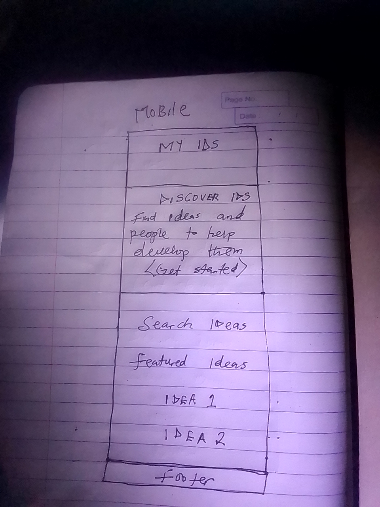
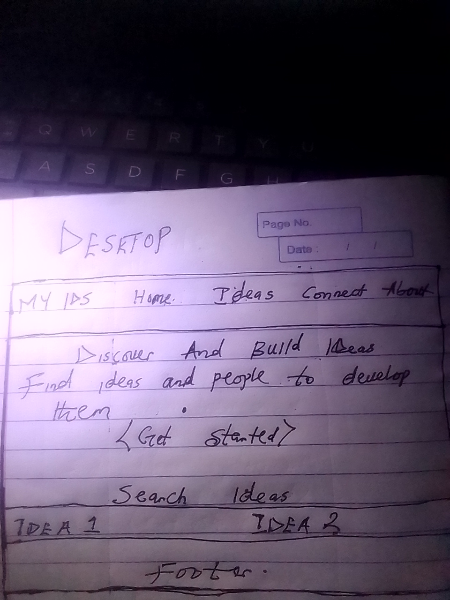

Individual Project Site Plan
Site Name
My IDS | Idea Discovery System
The name My IDS stands for Idea Discovery System. It communicates the main purpose of the website, which is helping people discover ideas and connect with others who can contribute skills, knowledge, resources, or other support.
Possible domain: myids.app
Site Purpose
My IDS is a website designed to help people discover ideas and connect with others around those ideas. Users can browse ideas, search for relevant opportunities, and learn what people have or need in order to develop their ideas.
The website focuses on idea discovery and collaboration rather than requiring users to have a specific degree, certificate, or professional background.
Scenarios
- How can I find ideas that match my skills, interests, or resources?
- Where can I find people who have something I need to develop an idea?
- How can I learn more about an idea before deciding whether I want to connect with the person who posted it?
- How can I save an interesting idea so I can find it again later?
Color Scheme
The color scheme uses blue, white, light gray, green, and dark gray to create a clean and professional interface.
#12355B
Used for the header, navigation, headings, and primary buttons.
#FFFFFF
Used for cards, content areas, and form fields.
#F4F7FA
Used for secondary backgrounds and sections.
#2E7D32
Used for successful actions and selected states.
#333333
Used for normal body text.
Typography
Poppins
Poppins will be used for the site name, main headings, and section headings.
Roboto
Roboto will be used for body text, navigation, forms, buttons, and general interface content.
Wireframe
The wireframes show the planned structure of the My IDS home page for small and large viewport sizes. They focus on navigation, the main introduction, idea discovery, search, featured ideas, and the footer.
Small View

Large View

JavaScript and Functionality Plan
The website will use JavaScript to provide dynamic content and interactive features.
- Fetch API will retrieve idea information from a local JSON data file.
- The project will use try...catch for asynchronous error handling.
- At least fifteen ideas will be dynamically generated from the data source.
- Each idea will display at least four data properties.
- Local storage will allow users to save ideas for later.
- A modal dialog will display additional information about an idea.
- DOM manipulation and event listeners will provide interactive functionality.
- Array methods such as filter and forEach will be used to process the data.
- Template literals will be used to generate dynamic HTML content.
- JavaScript will be organized using ES modules.
Website Pages
- Home: Introduces My IDS and displays selected ideas.
- Ideas: Allows visitors to browse, search, filter, save, and view ideas.
- Connect: Provides information about connecting around ideas and includes the project form.